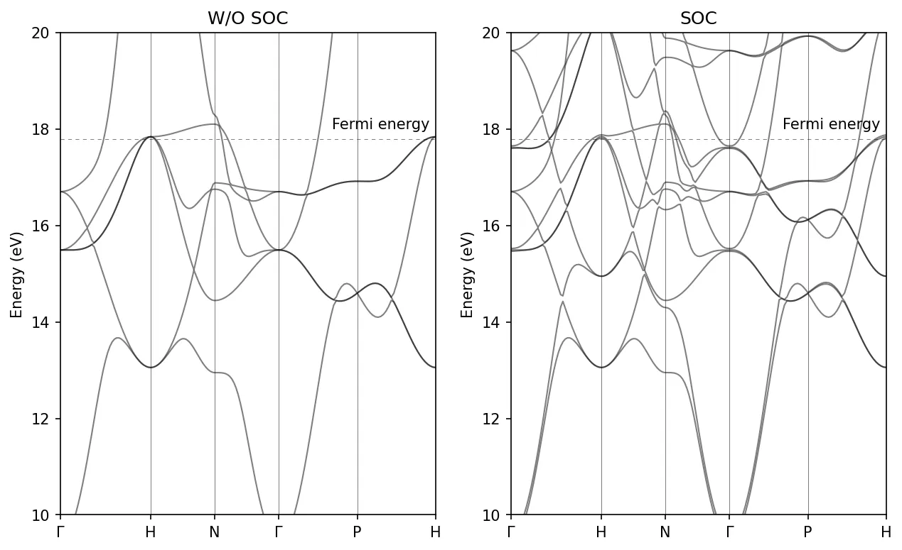
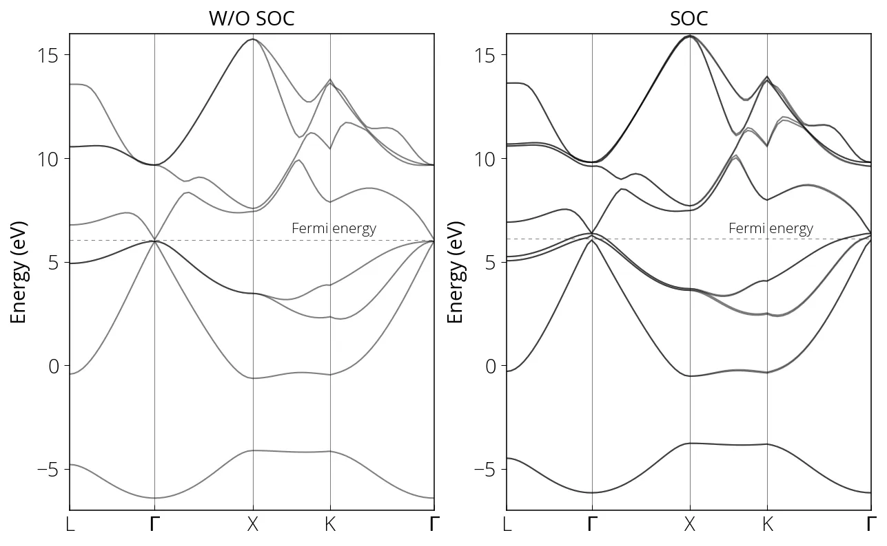

Acoplamento spin-órbita
Para considerar o efeito do acoplamento spin-órbita no cálculo de estrutura eletrônica no Quantum ESPRESSO, precisamos usar um pseudopotencial totalmente relativístico. As seguintes configurações são necessárias no card &SYSTEM:
&SYSTEM
...
noncolin = .true.
lspinorb = .true.
...
/Spin não colinear
Num cálculo simples com polarização de spin (nspin=2), considera-se o número quântico de spin (up ou down). No caso não colinear, o spin tem mais graus de liberdade e pode apontar em qualquer direção. O magnetismo não colinear é bastante comum na natureza: os spins não ficam paralelos (ferromagnético) nem antiparalelos (antiferromagnético), mas se orientam em espirais, helicoides, de forma inclinada ou desordenada. Ele pode surgir pela frustração geométrica da interação magnética, ou pela anisotropia magnetocristalina, resultado da interação entre o spin e a rede. Esse efeito relativístico vem do acoplamento spin-órbita.
Podemos restringir o momento magnético:
&SYSTEM
...
constrained_magnetization = 'atomic direction'
...
/A magnetização inicial pode ser definida por angle1 (ângulo com o eixo \(z\)) e angle2 (ângulo da projeção no plano \(xy\) com o eixo \(x\)). Veja também a função de penalidade (\(\lambda\)).
&SYSTEM
...
angle1(i) = 0.0d0
angle2(i) = 0.0d0
lambda = 0.5
...
/i é o índice do átomo no card ATOMIC_SPECIES.
Estratégia de convergência
Cálculos com acoplamento spin-órbita costumam ser difíceis de convergir. Use um mixing_beta menor nesses cálculos. Primeiro faça um cálculo colinear com pseudopotencial não relativístico e, depois, parta da densidade de carga obtida para fazer o cálculo spin-órbita não colinear.
&ELECTRONS
...
mixing_beta = 1.0000000000d-01
startingpot = 'file'
/Ao iniciar um cálculo não colinear a partir de uma densidade de carga existente de um cálculo lsda colinear, é preciso definir lforcet=.true.. O programa supõe que a densidade anterior aponta na direção z e a gira para a direção definida por angle1 (ângulo inicial da magnetização com o eixo \(z\), em graus) e angle2 (ângulo, em graus, da projeção no plano \(xy\) com o eixo \(x\)).
&SYSTEM
...
angle1(i) = 0.0
angle2(i) = 0.0
lforcet = .true.
/Garanta também que os cortes de energia e de densidade de carga são suficientes. Alguns pseudopotenciais podem ter problemas; experimente os de outra biblioteca. Em sistemas metálicos, lembre-se de aplicar smearing.
-
S matrix not positive definite: esse erro pode aparecer por instabilidade numérica causada por átomos sobrepostos. Verifique as posições atômicas com cuidado. Num dos meus cálculos, o erro foi resolvido aumentando o
ecutrho. -
O LDA+U simplificado não está implementado com magnetismo
noncol; uselda_plus_u_kind=1.
Estrutura de bandas do Fe com SOC
&control
calculation='scf'
pseudo_dir = '../pseudos/',
outdir='./tmp/'
prefix='fe'
/
&system
ibrav = 3,
celldm(1) = 5.39,
nat= 1,
ntyp= 1,
noncolin=.true.,
lspinorb=.true.,
starting_magnetization(1)=0.3,
ecutwfc = 70,
ecutrho = 850.0,
occupations='smearing',
smearing='marzari-vanderbilt',
degauss=0.02
/
&electrons
diagonalization='david'
conv_thr = 1.0e-8
mixing_beta = 0.7
/
ATOMIC_SPECIES
Fe 55.845 Fe.rel-pbe-spn-rrkjus_psl.1.0.0.UPF
ATOMIC_POSITIONS alat
Fe 0.0 0.0 0.0
K_POINTS AUTOMATIC
14 14 14 1 1 1Rode o cálculo scf:
mpirun -np 8 pw.x -i pw.scf.fe_soc.in > pw.scf.fe_soc.outPrepare o arquivo de entrada do cálculo nscf bands:
&control
calculation='bands'
pseudo_dir = '../pseudos/',
outdir='./tmp/'
prefix='fe'
/
&system
ibrav = 3,
celldm(1) = 5.39,
nat= 1,
ntyp= 1,
noncolin=.true.,
lspinorb=.true.,
starting_magnetization(1)=0.3,
ecutwfc = 70,
ecutrho = 850.0,
occupations='smearing',
smearing='marzari-vanderbilt',
degauss=0.02
/
&electrons
diagonalization='david'
conv_thr = 1.0e-8
mixing_beta = 0.7
/
ATOMIC_SPECIES
Fe 55.845 Fe.rel-pbe-spn-rrkjus_psl.1.0.0.UPF
ATOMIC_POSITIONS alat
Fe 0.0 0.0 0.0
K_POINTS tpiba_b
6
0.000 0.000 0.000 40 !gamma
0.000 1.000 0.000 40 !H
0.500 0.500 0.000 30 !N
0.000 0.000 0.000 30 !gamma
0.500 0.500 0.500 30 !P
0.000 1.000 0.000 1 !HRode o cálculo bands:
mpirun -np 8 pw.x -i pw.bands.fe_soc.in > pw.bands.fe_soc.outPor fim, pós-processe os dados da estrutura de bandas:
&BANDS
outdir='./tmp/',
prefix='fe',
filband='fe_bands_soc.dat',
/Neste caso o spin_component foi removido e adicionamos lsigma(3)=.true., que faz o programa calcular o valor esperado da componente z do operador de spin para cada autofunção e salvar todos os valores no arquivo fe.noncolin.data.3. Aqui, todos os valores são +1/2 ou -1/2.
mpirun -np 8 bands.x -i pp.bands.fe_soc.in > pp.bands.fe_soc.out
Cálculo com SOC para o GaAs
Veja os arquivos de entrada correspondentes.
mpirun -np 8 pw.x -i pw.scf.GaAs_soc.in > pw.scf.GaAs_soc.out
mpirun -np 8 pw.x -i pw.bands.GaAs_soc.in > pw.bands.GaAs_soc.out
mpirun -np 8 bands.x -i pp.bands.GaAs_soc.in > pp.bands.GaAs_soc.out
Conteúdo adaptado de Spin-Orbit Coupling, do Quantum Espresso Tutorial de Pranab Das, sob licença CC BY 4.0. Alterações: texto traduzido para o português; layout e navegação adaptados.